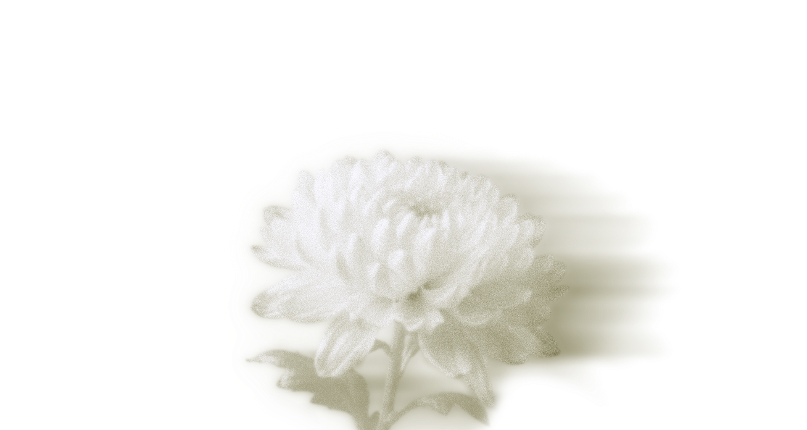

PORTFOLIO

살아가기 위해 존재하는 것들에 대한
About exiting for living
Presented by
Taeyeon Kim
"피었다 지는 그 사이, 아직도."
친애하는 당신에게,
삶이란 고통 속에서 피어나는 꽃과 같으며 언젠가는 지지만,
그저 존재하기만 해도 충분하다. 사랑을 담아, 그런 이들을 위한
愛悼
Regardless,
Taeyeon

Look through the remains left behind
PROFILE
김태연 Multidisciplinary Designer / BRANDING · VISUAL · UX/UI BASED IN SEOUL
EDUCATION
2026 SEO 최적화 디지털 브랜딩 UI/UX 웹서비스 구현 COMPLETED
2024 세명대학교 · 시각디자인학과 GRADUATED
2018 인명여자고등학교 GRADUATE
AWARDS / SELECTIONS
2023 Encouragement Award · 전통문양 이모티콘 공모전
2023 Selected · Blue Awards (한국상품문화디자인학회)
2021 Selected · 국제디자인트렌드대전
LANGUAGES
Korean — Native / Japanese — Studying toward JLPT N3 / English — Working proficiency
CERTIFICATIONS
GTQ 1급 · GTQi 1급
TOOLS
Figma · Photoshop · Illustrator · InDesign
WORKFLOW
Vibe Coding · Claude / Cursor / GPT
OUTPUT
Branding · Package · Editorial / UI/UX · Detail Page · Banner / Emoticon · Pattern
Selected Work
2023 — 2026
Project 01
Brand · Interaction
Project 02
Editorial · Web
Project 03
UX · System
Contact
hello@example.com